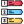

Imágenes
Con la etiqueta vacía <img> se puede incrustar una imagen en un documento html. El atributo principal para usar esta etiqueta es src="URL", ademas es recomendado que se use el atributo alt="image description".
Ejemplo:

Este es un párrafo
Este es un párrafo
Este es un párrafo
Este es un párrafo
Este es un párrafo
Este es un párrafo
Con <hr> se puede mostrar una barra vertical horizontal.
Y con <br> se puede forzar un salto de linea.
Es importante recalcar que las etiquetas <hr> y <br> son
etiquetas vacias, lo que quiere decir que son etiquetas que tienen
etiqueta final o de cierre.
En este párrafo estoy usando <pre> para demostrar que en esta
etiqueta se conservan
los saltos espacios, pero esta
etiqueta tiene una fuente
predeterminada de la familia
monospace.
Existen 3 formas de agregar estilos.
Usar cualquiera de las formas de dar estilo mencionadas depende del proyectos, ya que en proyectos grandes no es buena práctica definir los estilos en el mismo documento html, y para una mejor legibilidad seria conveniente definir los estilos en un archivo externo y vincularlo al documento html. En el caso donde el proyecto no sea muy grande podria ser conveniente definir internamente los estilos o por preferencia del programador se podria dar etilos a ciertos elementos individualemente. En conclusión, el uso de cualquiera de las 3 formas de dar estilos depende del programdor y el proyecto.
La diferencia entre <b> y <strong> es que la primera se usa para colocar en negrita cualquier texto, mientras que la segunda se usa para indicar que el texo es importante.
Para hacer que un texto sea superindice se usa la
etiqueta <sup>
Por ejemplo:
23 = 8
Para hacer que un texto sea subindice se usa la
etiqueta <sub>
Por ejemplo:
H2O
Con la etiqueta vacía <img> se puede incrustar una imagen en un documento html. El atributo principal para usar esta etiqueta es src="URL", ademas es recomendado que se use el atributo alt="image description".
Ejemplo:
Los enlaces permiten ir de un documento a otros al hacer click sobre ellos, un enlace puede ser texto o imagen. Para indicar que un texto o imagen es un enlace se debe de usar la etiqueta <a>
Hay que mencionar que el atributo mas importante para la etiqueta <a> es href="URL" y opcionalmente pero recomendado se puede colocar el atributo title cuyo valor debe de ser una descripción de a donde lleva el link al pasar el puntero del mouse por el enlace.
De forma predeterminada un enlace no visitado se muestra de color azul, un enlace visitado se muestra de color morado y un enlace activo se muestra de color rojo. Además es posible especificar si la página solicitada se abrirá en la pestaña o ventana actual, otra pestaña o ventana y otras opciones adicionales con el atributo target="_self" (el valor predeterminado es _self que indica abrir en la pestaña o ventana actual).Imagen como link:

Los favicons son los iconos que se muestran en las pestañas de los
navegadores junto al título, normalmente su tamaño es de 16x16 pixeles.
La sintaxis es la siguiente:
<link rel="shortcut icon" href="favicon.ico"
type="image/x-icon">
la etiqueta <link> para el favicon debe de estar dentro de la etiqueta
<head>
En html existen etiquetas especiales que permiten crear tablas y son las siguientes:
| Nombre | Apellido | País |
|---|---|---|
| Adam | Smith | Estados Unidos |
| Miguel | Garu | Perú |
| Nombre | Apellido | País |
|---|---|---|
| Adam | Smith | Estados Unidos |
| Miguel | Garu | Perú |
Nota: Las etiquetas mencionadas en esta seccion de tablas solo son semanticas, ya que para hacerlas visulamente atractivas es necesario aplicarles estilos.
En el desarrollo de páginas web las listas son muy usadas, en html existen 3 etiquetas para definir listas y una etiqueta <li> que permite definir el elemento de las listas.
Se utilizan para presentar una lista de elementos encabezados por una viñeta en forma bolita, un cuadrado o otras formas. Por ejemplo:
Se utilizan para presentar una lista de elementos numerados, ordenados de forma secuencial o por importancia. Por ejemplo:
Se utilizan para presentar una lista de elementos, los cuales tienen una descripción. En este tipo de lista se usa la etiqueta <dt> para definir los elementos y se debe de usar la etiqueta <dd> para definir la descripción del elemento de lista de descripción. Por ejemplo:
Cada elemento html tiene una forma de visualización predeterminada, los dos valores de visualización más comunes son bloque y línea.
Los elementos con valor de visualización en bloque siempre comienzan con una nueva línea y los navegadores agregan un margen predeterminado antes y después del elemento. Un elemento a nivel de bloque siempre ocupa todo el ancho disponible (se extiende hacia la izquierda y la derecha tanto como puede). Dos ejemplos de este tipo de visualización son los elementos <p> y <div>.
Los elementos en línea son lo opuesto a los elementos en bloque y solo ocupan el ancho necesario. Además los elementos en línea no pueden contener elementos a nivel de bloque. Un ejemplo de este tipo de visualización es el elemento <span>.
Ejemplo de elemento en líneaNota: Usando la propiedad css display es posible cambiar los tipos de visualización predefinidos de los elementos html.
Para lograr mostrar una página web dentro de otro se usa la etiqueta <iframes>.
Con JavaScript las páginas web se vuelven dinámicas e interactiva. Existen 2 formas de usar este lenguaje en un documento html y son:
Mensaje: Presiona el botón para cambiar el mensaje.
Nota: En los navegadores que no tiene soporte habilitado para JavaScript o su navegador no admite JavaScript, el codigo de dicho lenguaje no funcionará. Para este contexto se debe de usar la etiqueta <noscript> para inidicarle al usuario que su navegador no soporta JavaScript.La principal función de los formularios es recolectar datos de los usuarios